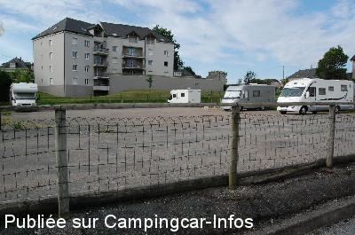
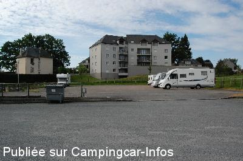
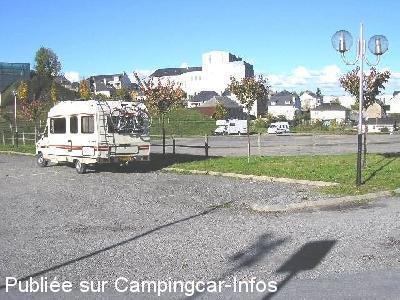
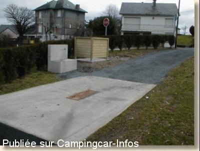

ASN = Aire de services avec stationnement nuit possible de :
EGLETONS
(N° 536)
Accès/adresse :
Rue Henry Dignac
Parking de l'Espace Ventadour
19300 EGLETONS
Parking de l'Espace Ventadour
19300 EGLETONS
Latitude : (Nord) 45.40384° Décimaux ou 45° 24′ 13′′
Longitude : (Est) 2.04801° Décimaux ou 2° 2′ 52′′
Tarif : 2014
Stationnement gratuit
Eau : 2 €
Type de borne : Autre
Services :


Tous commerces à proximité
Autres informations :
20 emplacements
Aire goudronnée éclairée
Tel Office du Tourisme : +33 (0)555 930 434
ot.egletons@wanadoo.fr
Cité médiévale
Centre de Découverte du Moyen-Age
Musée du Président Chirac à 10 km

Le 09/07/2014 par Mélodie

Le 08/07/2014 par melodie

Le 11/11/2004 par

Le 06/03/2003 par Robert Art
de
Papé Jack
le 05/09/2014 :
De passage fin août aire très propre et plane ,avec tout services,il y à bien une possibilité de faire les vidanges eau noire et WC.
De passage fin août aire très propre et plane ,avec tout services,il y à bien une possibilité de faire les vidanges eau noire et WC.
de
Bouet Walter
le 10/01/2014 :
2 janvier 2014.
Nous nous sommes arrêtés sur cette aire qui était déserte
et avons du constater le lendemain que notre serrure de soute avait été forcée. Pas de dégât mais le coin n'est pas sur et avons constaté des présences non loin correspondant au message précédent...
Eviter cet arrêt ...
D'autre part l'emplacement vidange est très haut et nous avons du faire marche arrière car notre pot d'échappement touchait. Enfin tv difficile à capter
2 janvier 2014.
Nous nous sommes arrêtés sur cette aire qui était déserte
et avons du constater le lendemain que notre serrure de soute avait été forcée. Pas de dégât mais le coin n'est pas sur et avons constaté des présences non loin correspondant au message précédent...
Eviter cet arrêt ...
D'autre part l'emplacement vidange est très haut et nous avons du faire marche arrière car notre pot d'échappement touchait. Enfin tv difficile à capter
de
Jean-Paul
le 03/03/2013 :
Le 25/02/13 Des squatteurs accompagnés de chiens dans de vieux fourgons étaient installés sur cette aire en zone urbaine. Nous avons préféré aller à Marcillac la Croisille pour passer la nuit dans un site plus agréable.
Le 25/02/13 Des squatteurs accompagnés de chiens dans de vieux fourgons étaient installés sur cette aire en zone urbaine. Nous avons préféré aller à Marcillac la Croisille pour passer la nuit dans un site plus agréable.
de
jlr
le 20/08/2012 :
L'aire est devenue payante , c'est-à-dire qu'on introduit de l'argent , et que rien ne vient en échange ; ce n'est pas de l'escroquerie , mais ça y ressemble .
L'aire est devenue payante , c'est-à-dire qu'on introduit de l'argent , et que rien ne vient en échange ; ce n'est pas de l'escroquerie , mais ça y ressemble .
de
wolfenn
le 17/08/2012 :
Bonjour ,de passage ,dans cette commune ou il fait bon stationner du cote du lac ,l'aire de service a ete modifiée ,et apres les services artisanaux et bien sympa,une borne "en plastique " les a remplaces ,il faut payer ,ce qui est justifié ,mais ces "trucs " electrique fonctionnenet/ ce n'etais pas le cas quanq ils ont le temps !!!et je peux vous dire qu'au 7/08/ce n'etais pas le cas ,dommage ,mais le site du lac est tellement agreable ,merci a la commune
Bonjour ,de passage ,dans cette commune ou il fait bon stationner du cote du lac ,l'aire de service a ete modifiée ,et apres les services artisanaux et bien sympa,une borne "en plastique " les a remplaces ,il faut payer ,ce qui est justifié ,mais ces "trucs " electrique fonctionnenet/ ce n'etais pas le cas quanq ils ont le temps !!!et je peux vous dire qu'au 7/08/ce n'etais pas le cas ,dommage ,mais le site du lac est tellement agreable ,merci a la commune
de
mantoni
le 05/07/2011 :
de passage le 28/05/2011
parking non réserver au cc à partager avec usagers piscine,salle des congres,boulodrome et autres
de passage le 28/05/2011
parking non réserver au cc à partager avec usagers piscine,salle des congres,boulodrome et autres
de
Albatros63
le 26/04/2011 :
de passage le lundi 18 04 2011.l'aire a changer de visage, parking plus petit et plat mais stationnement pour 20 cc.
construction d'un espace aquatique qui a fait réduire ce parking
de passage le lundi 18 04 2011.l'aire a changer de visage, parking plus petit et plat mais stationnement pour 20 cc.
construction d'un espace aquatique qui a fait réduire ce parking
de
angélique rey
le 14/07/2010 :
De passage ce week-end sur cette aire pour les services, nous avons trouvé une aire propre et totalement gratuite vidanges + remplissage d'eau propre!
De passage ce week-end sur cette aire pour les services, nous avons trouvé une aire propre et totalement gratuite vidanges + remplissage d'eau propre!
de
bronxiol
le 19/08/2009 :
L'aire de stationnement se trouve sur une place à coté de la future piscine. Le centre ville est juste au dessus. Un village agréable où l'on trouve tout sur place.
L'aire de stationnement se trouve sur une place à coté de la future piscine. Le centre ville est juste au dessus. Un village agréable où l'on trouve tout sur place.
de
Wintz
le 09/03/2009 :
Aire très agréable située près de la ville. Nous sommes passés pour la fête de la Cerise, organisation parfaite, grand parking et aire de ravitaillement pratique. Merci à la commune, nous reviendrons.
Aire très agréable située près de la ville. Nous sommes passés pour la fête de la Cerise, organisation parfaite, grand parking et aire de ravitaillement pratique. Merci à la commune, nous reviendrons.
de
illuro
le 11/11/2006 :
De passage le 7/11. A croire que le concepteur de cette aire n'a jamais vu un CC. l'accès est très difficile pour un CC de 7 mètres et + car rampe accès en dos d'âne et frottement bas de caisse ou échappement garanti.Il n'y a qu'a constater les traces au sol.Et puis ce problème endémique de robinet d'eau propre unique. Voir le commentaire précédent.
De passage le 7/11. A croire que le concepteur de cette aire n'a jamais vu un CC. l'accès est très difficile pour un CC de 7 mètres et + car rampe accès en dos d'âne et frottement bas de caisse ou échappement garanti.Il n'y a qu'a constater les traces au sol.Et puis ce problème endémique de robinet d'eau propre unique. Voir le commentaire précédent.
de
soisik
le 04/11/2006 :
Pas très facile à trouver, les panneaux indicateurs ont dû disparaitre dans la tourmente des travaux en cours dans la ville. Très grande Aire. Dommage qu'il n'y aie pas de robinet spécifique pour le remplissage des CC, celui existant est trop près de la vidange cassette WC et quand on connait le manque d'hygiène de certains, on hésite à se ravitailler en eau potable. Malgrè un -2°, nous étions 5 CC à passer une nuit très calme.
Pas très facile à trouver, les panneaux indicateurs ont dû disparaitre dans la tourmente des travaux en cours dans la ville. Très grande Aire. Dommage qu'il n'y aie pas de robinet spécifique pour le remplissage des CC, celui existant est trop près de la vidange cassette WC et quand on connait le manque d'hygiène de certains, on hésite à se ravitailler en eau potable. Malgrè un -2°, nous étions 5 CC à passer une nuit très calme.